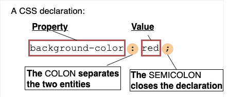
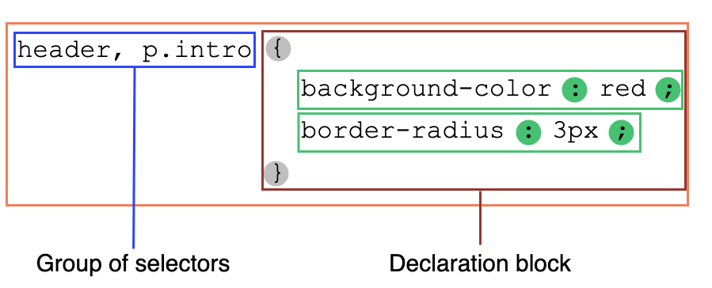

The basic goal of the Cascading Stylesheet (CSS) language is to allow a browser engine to paint elements of the page with specific features, like colors, positioning, or decorations. The CSS syntax reflects this goal and its basic building blocks are:
Setting CSS properties to specific values is the core function of the CSS language. A property and value pair is called a declaration, and any CSS engine calculates which declarations apply to every single element of a page in order to appropriately lay it out, and to style it.
Both properties and values are case-insensitive by default in CSS. The pair is separated by a colon, ':' (U+003A COLON), and white spaces before, between, and after properties and values, but not necessarily inside, are ignored.

There are more than 100 different properties in CSS and a nearly infinite number of different values. Not all pairs of properties and values are allowed and each property defines what are the valid values. When a value is not valid for a given property, the declaration is deemed invalid and is wholly ignored by the CSS engine.
Declarations are grouped in blocks, that is in a structure delimited by an opening brace, '{' (U+007B LEFT CURLY BRACKET), and a closing one, '}' (U+007D RIGHT CURLY BRACKET). Blocks sometimes can be nested, so opening and closing braces must be matched.
Such blocks are naturally called declaration blocks and declarations inside them are separated by a semi-colon, ';' (U+003B SEMICOLON). A declaration block may be empty, that is containing null declaration. White spaces around declarations are ignored. The last declaration of a block doesn't need to be terminated by a semi-colon, though it is often considered good style to do it as it prevents forgetting to add it when extending the block with another declaration.
A CSS declaration block is visualized in the diagram below.

If style sheets could only apply a declaration to each element of a Web page, they would be pretty useless. The real goal is to apply different declarations to different parts of the document.
CSS allows this by associating conditions with declarations blocks. Each (valid) declaration block is preceded by one or more comma-separated selectors, which are conditions selecting some elements of the page. A selector group and an associated declarations block, together, are called a ruleset, or often a rule.
A CSS ruleset (or rule) is visualized in the diagram below.

As an element of the page may be matched by several selectors, and therefore by several rules potentially containing a given property several times, with different values, the CSS standard defines which one has precedence over the other and must be applied: this is called the cascade algorithm.
Rulesets are the main building blocks of a style sheet, which often consists of only a big list of them. But there is other information that a Web author wants to convey in the style sheet, like the character set, other external style sheets to import, font face or list counter descriptions and many more. It will use other and specific kinds of statements to do that.
A statement is a building block that begins with any non-space characters and ends at the first closing brace or semi-colon (outside a string, non-escaped and not included into another {}, () or [] pair).

There are two kinds of statements:
@' (U+0040 COMMERCIAL AT), followed by an identifier and then continuing up to the end of the statement, that is up to the next semi-colon (;) outside of a block, or the end of the next block. Each type of at-rules, defined by the identifier, may have its own internal syntax, and semantics of course. They are used to convey meta-data information (like {{ cssxref("@charset") }} or {{ cssxref("@import") }}), conditional information (like {{ cssxref("@media") }} or {{ cssxref("@document") }}), or descriptive information (like {{ cssxref("@font-face") }}).Any statement which isn't a ruleset or an at-rule is invalid and ignored.
There is another group of statements – the nested statements. These are statements that can be used in a specific subset of at-rules – the conditional group rules. These statements only apply if a specific condition is matched: the @media at-rule content is applied only if the device on which the browser runs matches the expressed condition; the @document at-rule content is applied only if the current page matches some conditions, and so on. In CSS1 and CSS2.1, only rulesets could be used inside conditional group rules. That was very restrictive and this restriction was lifted in CSS Conditionals Level 3. Now, though still experimental and not supported by every browser, conditional group rules can contain a wider range of content: rulesets but also some, but not all, at-rules.